💼
Quieres un ingreso propio
Aprende un oficio que se paga en efectivo, desde tu casa y con tus horarios. Muchas alumnas cosen para su barrio antes de terminar el curso.
No necesitas experiencia previa. En pocos meses estarás cortando, ensamblando y terminando prendas que la gente jurará que compraste en una boutique.
Un taller con más de 30 años formando costureras, emprendedoras y diseñadoras
Da igual si nunca has enhebrado una aguja. Aquí empezamos por el principio.
Aprende un oficio que se paga en efectivo, desde tu casa y con tus horarios. Muchas alumnas cosen para su barrio antes de terminar el curso.
Deja de conformarte con tallas que no te quedan. Diseña y cose exactamente lo que quieres, con la tela que quieres.
Tres horas a la semana lejos del ruido, creando algo con tus manos. Muchas llegan por hobby y terminan vendiendo.
Si aprendiste “a ojo”, aquí entenderás patronaje, moldería y acabados profesionales. La diferencia entre modistería y alta costura.
Tres áreas técnicas. Cada una desbloquea un tipo de prenda distinto.
Camisetas, bodies, leggins y vestidos ajustados. Aprende a domar las telas que se estiran: puntadas correctas, márgenes, cuellos y acabados que no se deforman con el uso.
Blusas, pantalones, faldas y camisas. El corazón de la alta costura: patronaje a la medida, pinzas, cuellos, mangas, cremalleras y forros bien montados.
Brasieres, panties y piezas de lencería. La técnica más fina y detallada, y una de las más rentables si piensas vender.
Cada prenda que ves fue confeccionada por una alumna del taller, muchas empezando desde cero.
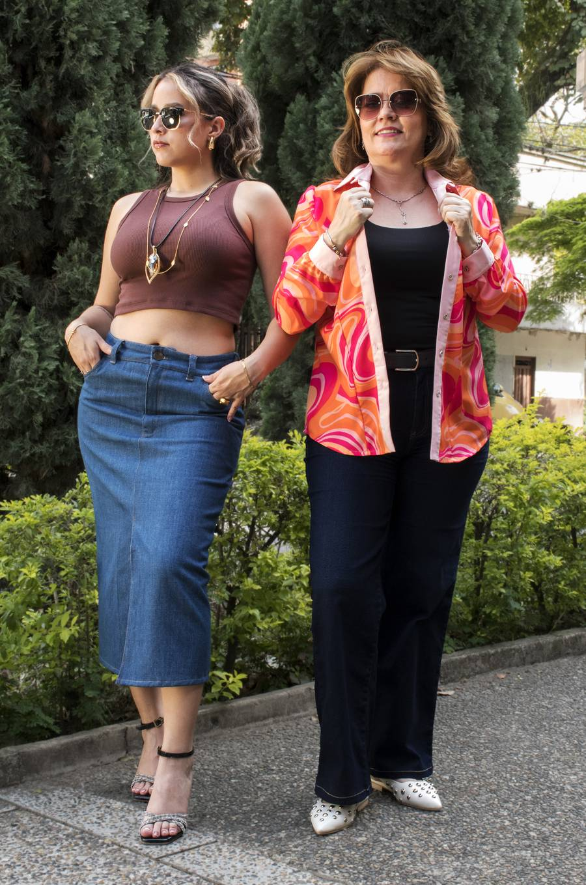
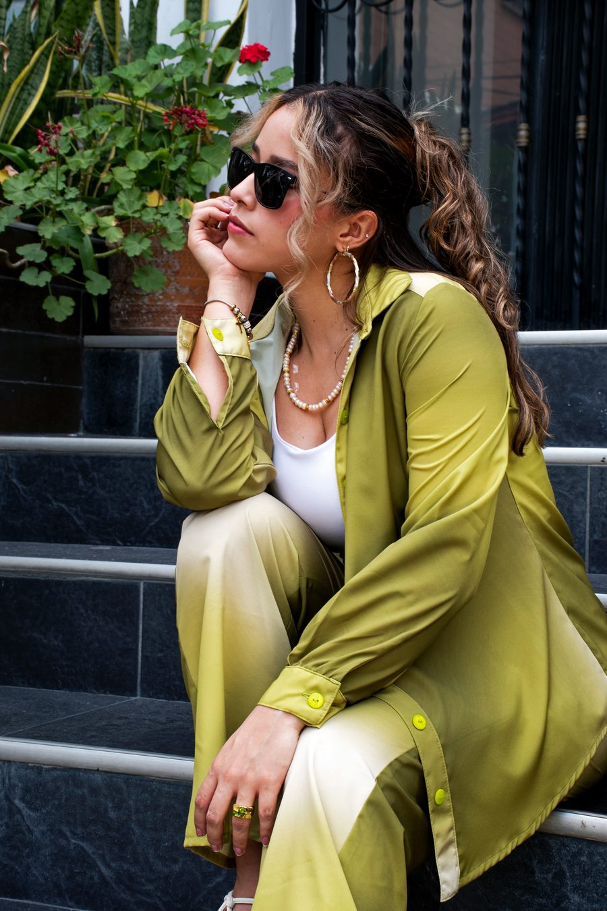
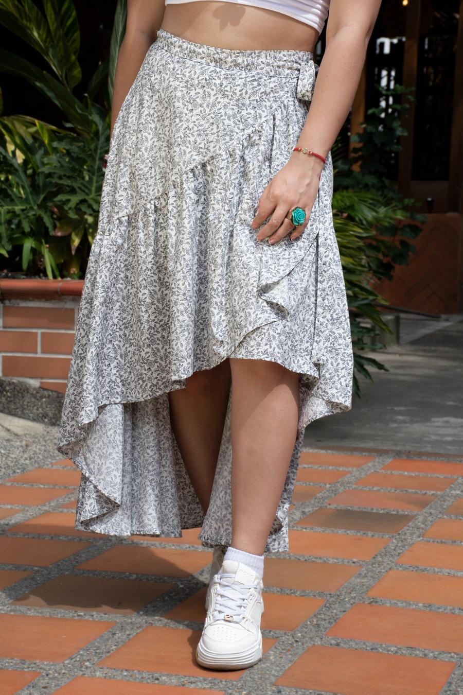
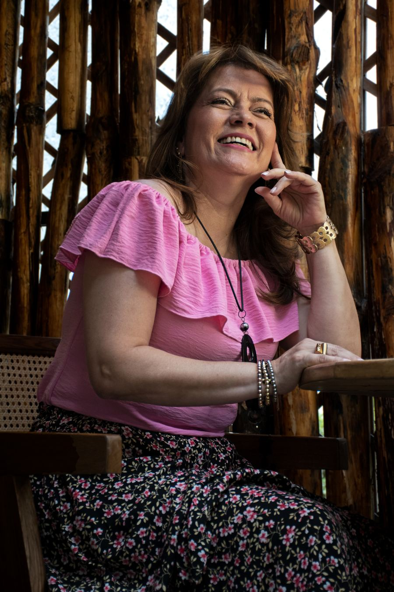
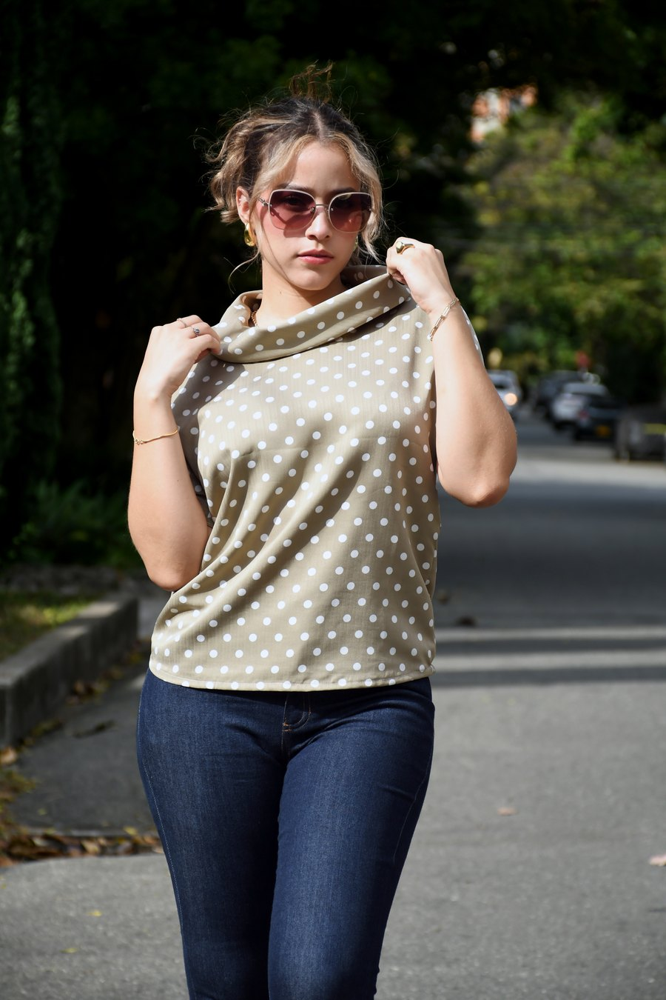
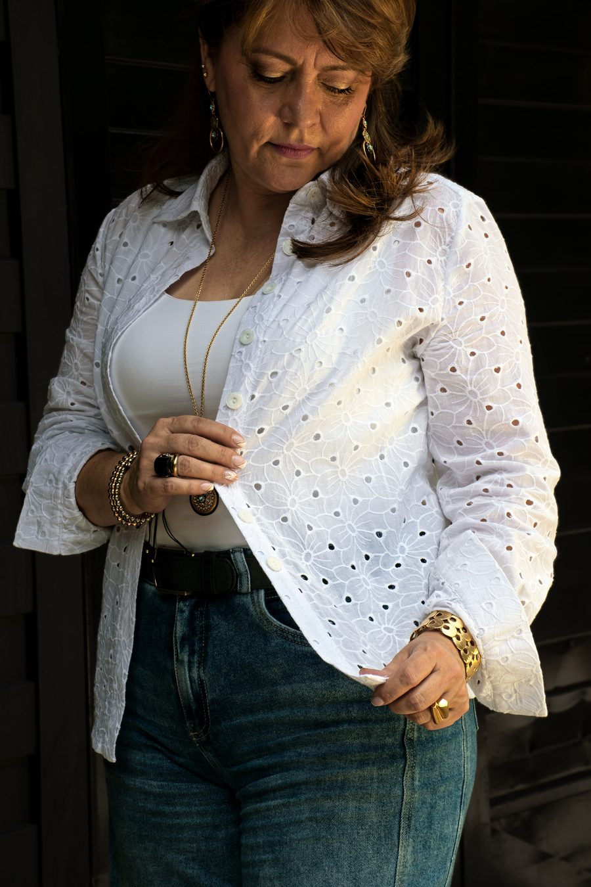
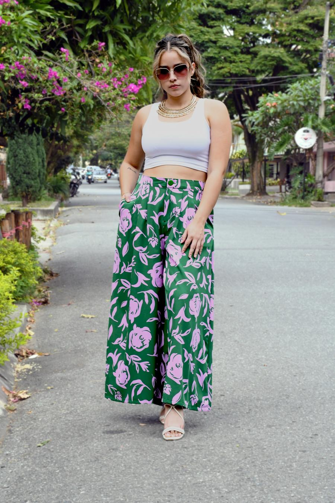
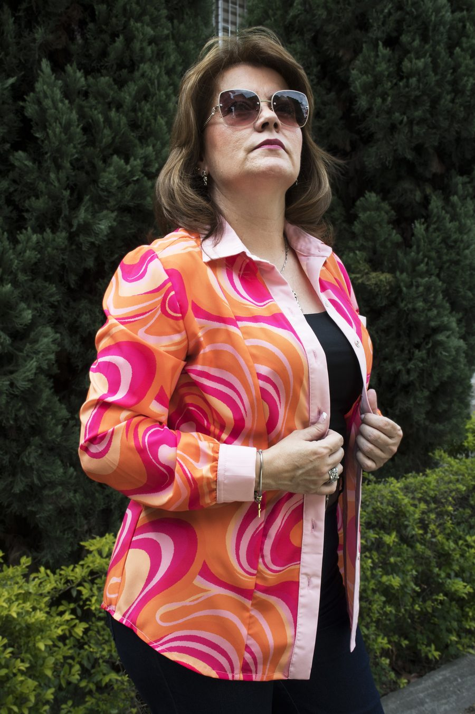
Prendas confeccionadas por alumnas del taller.
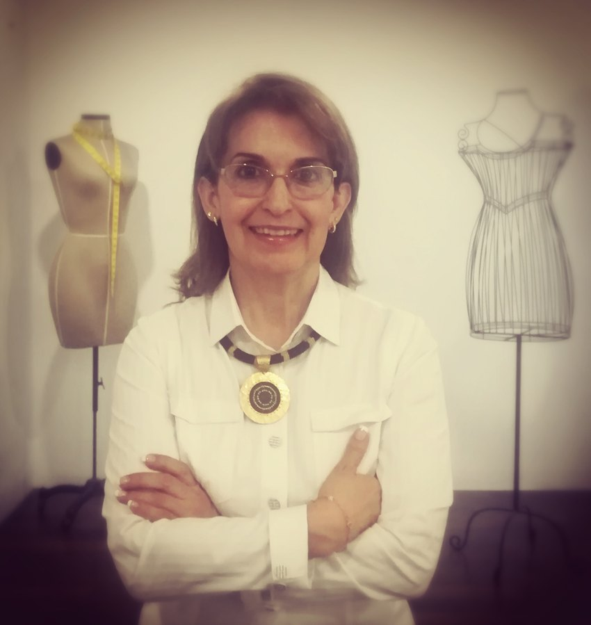
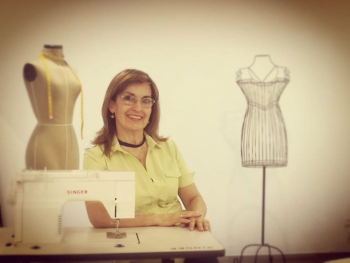
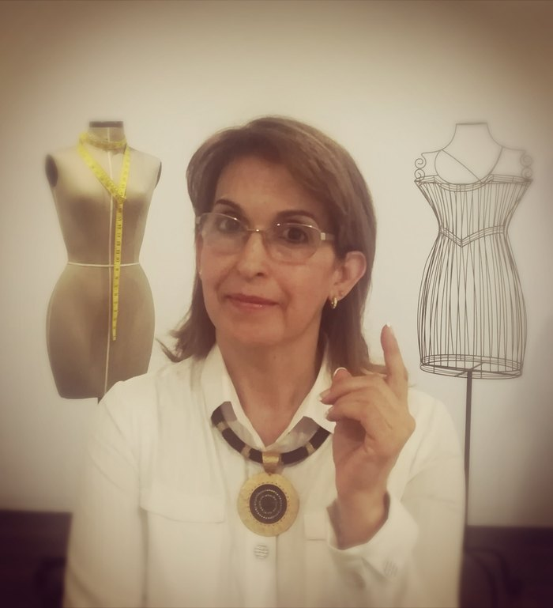
Diseñadora y patronista · Fundadora de la Academia
Llevo más de tres décadas enseñando a coser, y en todo ese tiempo aprendí algo: la mayoría de las mujeres no dejan la costura porque sea difícil, sino porque nadie les explicó bien el principio.
Por eso enseño con grupos pequeños y acompaño personalmente cada corte, cada molde y cada costura. Aquí no te entrego un manual y te dejo sola frente a la máquina. Aquí te enseño la técnica real de la alta costura: la que hace que una prenda se vea comprada, no improvisada.
Ven al taller, conócelo, mira lo que hacen mis alumnas y decide con calma. Sin compromiso.
Miriam Sandoval
Grupos pequeños, mesas amplias y acompañamiento uno a uno. Así son las clases por dentro.
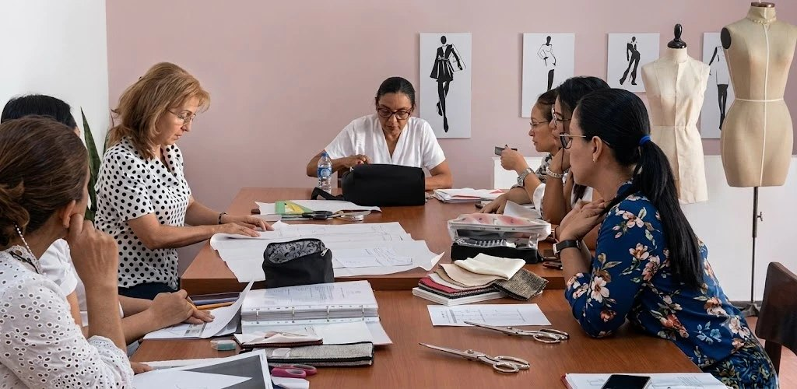
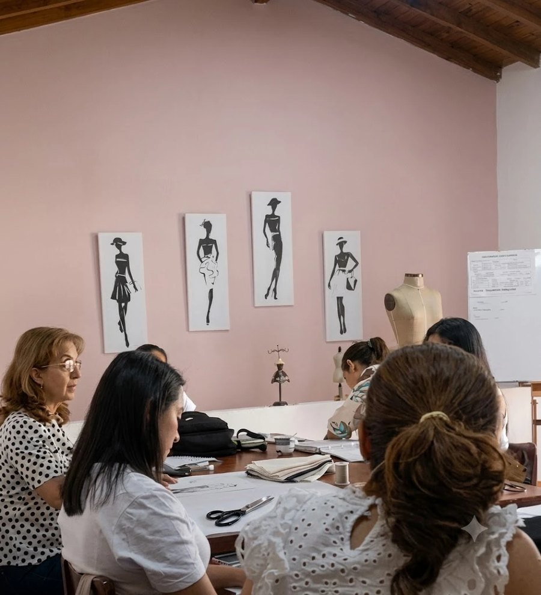
Un mensaje por WhatsApp al 313 257 5989. Te resolvemos dudas y coordinamos el día de tu visita.
Vienes, conoces el espacio, ves los trabajos y hablas conmigo en persona. Sin compromiso de inscripción.
Definimos juntas los días y la jornada que se acomodan a tu rutina, y arrancas en la clase siguiente.
$150.000 / mes
Pago mensual · Sin matrícula oculta
Los materiales (telas, hilos, insumos) los consigue cada alumna y se piden poco a poco, según la prenda que estemos trabajando.
Sí. La mayoría de mis alumnas llegan sin haber tocado una máquina. Empezamos por lo más básico: cómo enhebrar, cómo controlar la velocidad, cómo hacer una costura recta. Nadie se queda atrás.
No. Una máquina familiar sirve perfectamente. Lo indispensable es que la tengas en casa para practicar entre clases: ahí es donde realmente se aprende.
Depende de tu ritmo y de qué tan lejos quieras llegar. El pago es mensual, así que avanzas sin presión y decides hasta dónde. Lo conversamos en tu visita.
Nada por adelantado. Te voy pidiendo telas e insumos a medida que avanzamos con cada prenda, para que no gastes de más ni compres lo que no vas a usar.
Los días se acuerdan al inscribirte, dentro de la jornada de mañana (9:00 a.m. – 12:00 m.) o de tarde (2:30 – 5:30 p.m.).
Es justo lo que te recomiendo. Escríbeme al WhatsApp, coordinamos el día y vienes a ver el espacio y los trabajos. Sin compromiso.
Por supuesto. Varias alumnas empezaron cosiendo para ellas y hoy cosen para sus clientas. La técnica que aquí aprendes es la misma que se usa a nivel profesional.
Ven, conoce el taller, mira de cerca lo que hacen las alumnas y decide con calma. La visita no te compromete a nada.
📞 313 257 5989 · 📍 Carrera 81b # 49-34, Calasanz, Medellín